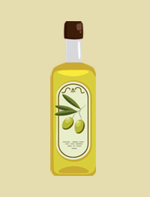

Knapperige kabouterhapjes
Zoek de oesterzwammen

🔮 Houd de tag tegen de magische lezer...
Smakelijk!
Ingrediënten:
- 250g oesterzwammen
- Olijfolie
- Kruiden
Bereiding:
- Bak de zwammen goudbruin.
✅
